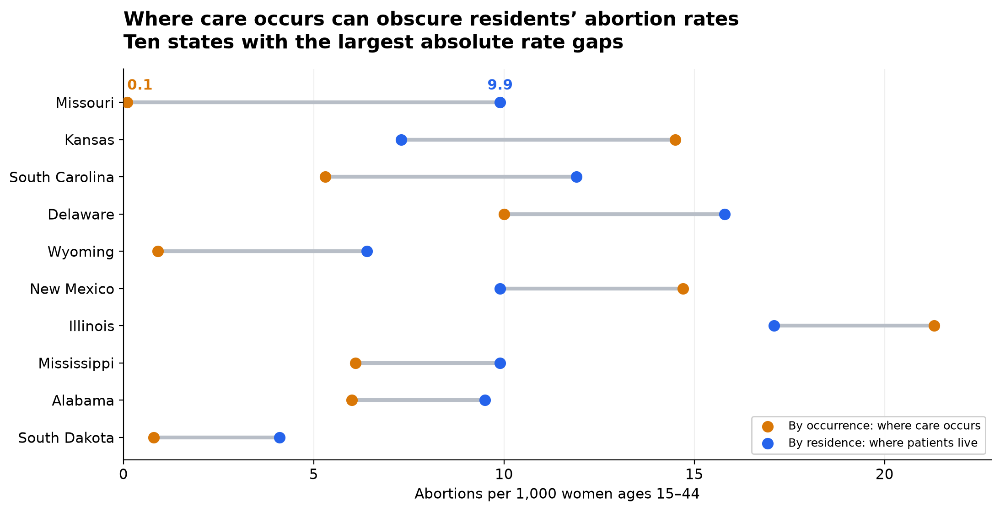
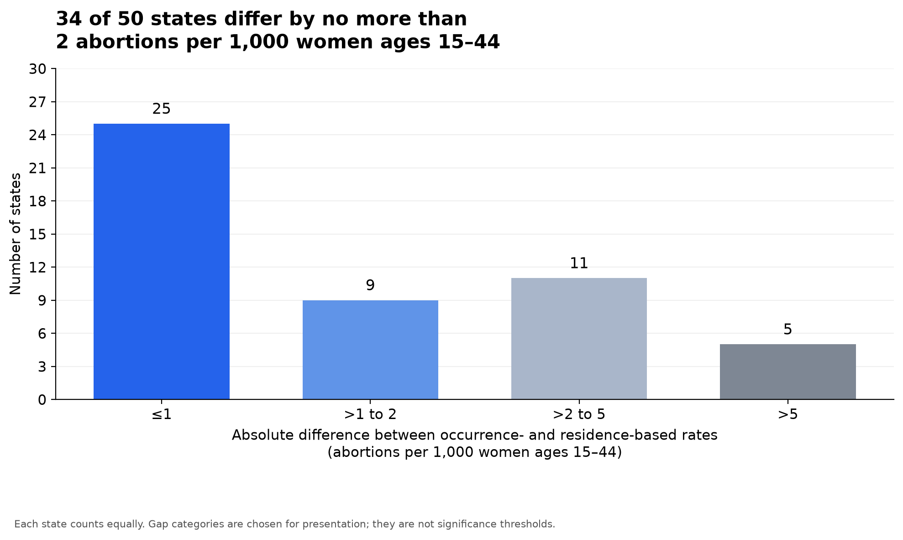

Proposition: Occurrence-based abortion rates are not reliable for comparing abortion incidence among state residents.
Both visualizations use state-level abortion rates for 2020 from the Guttmacher Institute. Occurrence-based rates count abortions by where care occurs; residence-based rates count abortions by where patients live. Rates are expressed per 1,000 women ages 15–44. The absolute gap is |occurrence-based rate − residence-based rate|.
Source: Guttmacher Institute, Abortion Data by U.S. State; 2020 occurrence and residence rate columns. Dataset listed in the Project 2 assignment.
Design decisions are self-assessed from −2 (fully deceptive) to +2 (fully earnest). These scores describe individual choices, rather than the visualization as a whole.
For the proposition

Design decisions and rationale
- Connected dots on a shared numerical axis. Score: +2. I initially tried grouped bars with states on the x-axis and rates on the y-axis, but the differences were not immediately clear to me. I also tried connecting the values with sloped lines and using stacked bars; neither made the comparison as intuitive as I wanted. I chose a horizontal dumbbell plot because each dot shows an original rate and the connecting line makes the absolute gap visible. This supports direct comparison without adding the two rates together, although most exact values still require estimation from the axis.
- Selecting and ordering the ten largest absolute gaps. Score: −1.5. I calculated absolute differences, selected the ten largest, and placed the largest discrepancy first. This concentrates attention on the strongest examples supporting the proposition, but excludes the forty states with smaller gaps and may make large discrepancies seem more widespread. Showing all fifty states would provide broader context, while the selected view makes individual differences easier to inspect. The subtitle discloses the selection, which limits but does not eliminate the potentially misleading impression.
- Adding numerical labels to Missouri. Score: −0.5. I added labels to the state with the largest gap so readers can immediately compare 0.1 with 9.9. This is accurate and makes one example concrete, but selectively annotating the most extreme case gives it additional persuasive weight. Labeling every state would provide equal numerical detail at the cost of more clutter; labeling only Missouri keeps the chart focused while leaving other values less precise to read.
- Defining the two measures with distinct colors and a legend. Score: +2. Orange consistently identifies occurrence-based rates and blue identifies residence-based rates, while the legend explains their meanings in plain language. This lets readers see that occurrence-based rates can be either higher or lower than residence-based rates, rather than suggesting a single direction of error. A monochrome display would make the two endpoints harder to distinguish. The title frames these differences as an issue of interpretation, while the legend preserves the distinction between the measures.
Against the proposition

Design decisions and rationale
- Replacing whole-number bins with four broader categories. Score: −1. I first examined differences using whole-number bins and noticed a strongly right-skewed distribution: many states had smaller gaps, while a few had much larger gaps. I then used the categories ≤1, >1 to 2, >2 to 5, and >5 to simplify the display and reduce the visual impact of the largest differences. The final category retains those states in the count but conceals their individual gap sizes. These are categorical bars showing counts, not a continuous histogram whose widths represent interval sizes; narrower bins would reveal more detail about the tail.
- Emphasizing “34 of 50” and the threshold of 2 in the title. Score: −1. The title combines the first two categories into a majority-based argument that occurrence-based rates approximate residence-based rates in many states. The count is accurate, but the threshold of 2 is a presentation choice rather than an established standard for a negligible difference. A neutral distribution title would leave more interpretation to the reader; this title directs readers toward similarity. Its limitation is that a small absolute gap can still be substantial relative to a state’s rate.
- Using blue for smaller gaps and muted gray for larger gaps. Score: −0.5. The first two bars receive blue colors, while the larger-gap categories are gray. This reinforces the title by drawing attention to the categories that support the opposing stance and reducing the emphasis on exceptions. Using one color for all bars would give the categories more equal visual treatment. The counts remain readable, but the color hierarchy helps determine which part of the distribution readers notice first.
- Including all fifty states, exact counts, and a zero baseline. Score: +2. All states remain represented, and the labels 25, 9, 11, and 5 allow readers to verify the distribution and the title’s total. The zero baseline makes bar heights proportional to counts, while the footnote explains that states count equally and that the categories are not significance thresholds. A population-weighted analysis would answer a different question about how many women are represented. This chart accurately describes the distribution across states, but cannot establish the population-level impact or prove that the two measures are interchangeable.
Final reflection
The main challenge was finding representations that made each argument easy to understand. For the first visualization, I tried grouped bars, sloped connections, and stacked bars before settling on connected dots. The earlier designs let me explore the rates, but the final dumbbell plot made their differences more immediately visible. Adding Missouri’s labels made the strongest example concrete. For the second visualization, the initial whole-number bins helped me recognize the right-skewed distribution. Broader categories then made the majority of smaller gaps easier to summarize, while reducing the detail shown for the largest gaps.
The contrast between the final plots shows how much a message can change without changing the underlying rates. Selecting the largest gaps makes disagreement prominent, while counting states within broader categories makes similarity prominent. Both statements can be numerically correct, but neither alone settles whether occurrence-based rates are reliable for comparing residents. That judgment depends on the comparison being made and how much difference is acceptable. An absolute gap of 2 does not have the same relative meaning in every state, and giving each state equal weight does not describe how many women are affected.
I define ethical analysis and visualization as communicating accurate values while providing enough context for readers to understand the scope and limitations of the claim. Selection, grouping, color, and titles can support a clear argument, but they become misleading when they encourage conclusions that the displayed evidence cannot justify. In the first plot, the main risk is generalizing from the ten most extreme states to the whole country. In the second, the risk is treating a chosen cutoff as proof that discrepancies are unimportant. Disclosing the selection and the category choices helps readers evaluate those claims, although disclosure alone does not remove the persuasive effect of what is emphasized.